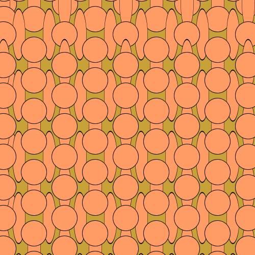
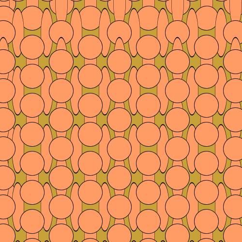
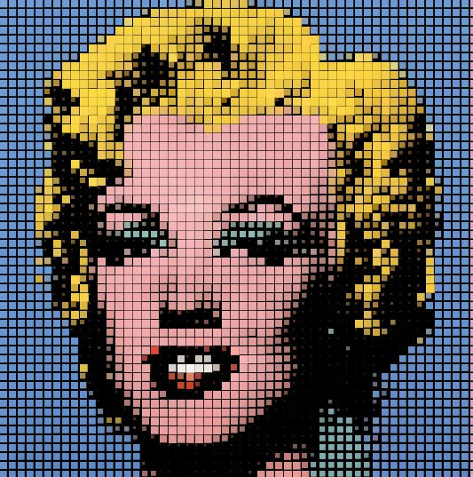
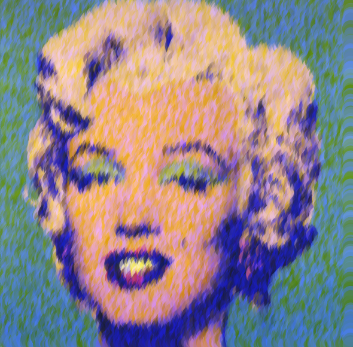
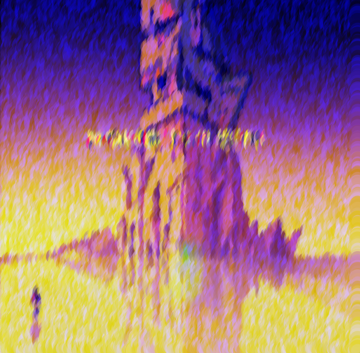

Retour à tous les travaux
Programmation Créative 1
Programmation Créative 1 est dédié à l'introduction de l'environnement Processing. Processing contient les fonctions essentielles à la programmation tout en étant simple d’utilisation. Les premières expérimentations débutent en contruisant un programme autour du dessin et de la composition visuelle. On aborde également le cas de l'image, comment la transformer en accédant directement aux valeurs de ses pixels.
Travaux 2014/2015: réalisations des étudiants: Alice Neussaint, Chloé Bailleul, Clementine Navarro, Joris Delapallière, Kevin Capoen, Laetitia Pira, Mariama Camara, Megane Demaret, Nadia Benmouffok, Noemie Vanelle, Pierre Normand

 

 

 